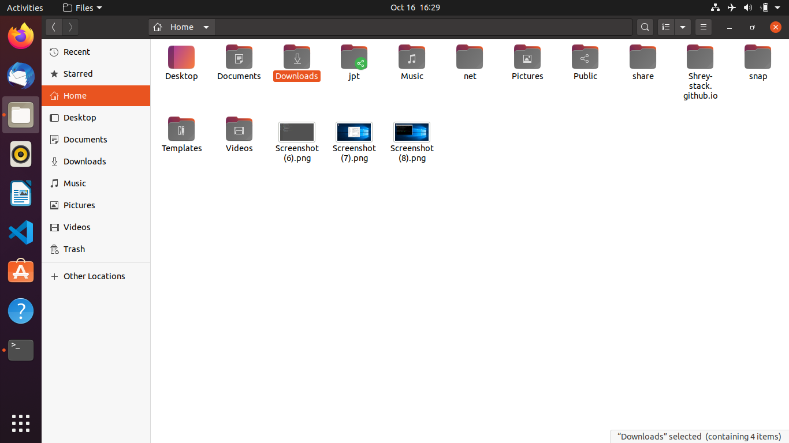

SSH
SSH, also known as Secure Shell or Secure Socket Shell, is a network protocol that gives users a secure way to access a computer over an unsecured network.
To install SSH to your ubuntu follow the commands below:
After that, open PuTTY, and in the hostname section, type the IP address of your Ubuntu machine.
You will be asked for your username and your password of your Ubuntu and you're done.
Congratulations! You can now access your machine remotely.
FTP
The next thing I did was use FTP.The File Transfer Protocol is a standard network protocol used for the transfer of computer files between a client and server on a computer network.
To install FTP to your ubuntu, follow the commands below:
sudo apt-get install vsftpd
Then, in windows, download Filezilla. You can download it from Download Filezilla
Open filezilla and type your ubuntu's IP address in the host section, your username and your password of Ubuntu and press Quickconnect. Select the files that you want to transfer, rightclick and click upload. Your files will be transferred to your Ubuntu machine.

LAMP STACK
LAMP stack is a group of open source software used to get web servers up and running. The acronym stands for: *L: Linux
*A: Apache
*M: MySQL
*P: PHP
Since the virtual private server is already running Ubuntu, the linux part is taken care of. Here is how to install the rest.
Apache:
Apache HTTP Server is a free and open-source web server that delivers web content through the internet.To install apache:
After installing, you have to enable ufw and then check the status. Voilà, you're done!
MySQL:
MySQL is a database system used on the web. It is a database system that runs on a server and is ideal for both small and large applications.To install MySQL:
After that, follow the command below and enter your password.
And Voilà, you're done!
PHP
PHP is a server scripting language, and a powerful tool for making dynamic and interactive Web pages.PHP 7 is the latest stable release.
To instal PHP:
Voilà, you're done!